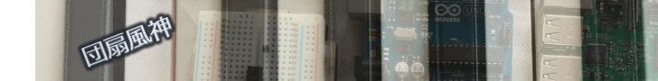

MIDIでIoT
Uchiwa Fuujinn 団扇風神
はじめに
Arduino をもっと面白く使いたいと思っています。Arduinoの使い方のバリエーションを広げることで、子供たちがプログラムをやって見ようという気持ちを掻き立てることができると思います。
まず、Arduino の開発や実行環境の敷居を下げたいと思います。ArduinoをMIDIでコンピュータとつないで、簡単に手に入るMIDIのアプリ―ケーションと、Arduinoの開発、動作環境を合体させたいと思います。
Arduinoを楽器にするとか、Arduinoを楽器のMIDIコントローラにしたい、というだけではありません。MIDIの沢山あるアプリケーションをArduinoとつなぐことで、もっと使い方を広げることができます。ScratchのようなHTMLで書かれたアプリケーションとつなぐこともできます。
Arduino はほとんどの場合、Arduino IDE を使って開発をします。これをまったく使わないで、というのは難しいかもしれません。しかし、MIDIは、Chromeブラウザがあれば、MIDI を扱うことができます。WINDOWS, MAC, Linux を問いません。Chromeブラウザをインストールしコンピュータであれば、Arduinoを開発、実行することができます。
MIDI は規格が立ち上がってから４０年近くが経過しています。そして、今でもMIDI は音楽制作では欠くことができない存在だと思います。高価なアプリケーションから、フリーで手に入るものまで沢山のアプリケーションがあります。それぞれのアプリケーションは、音楽制作をするもの、ライブやDJプレイをするもの、画像や照明をコントロールするものもあります。ArduinoをMIDIでつなくことができれば、これらのアプリケーションの一部としてArduinoが活躍できるのではないでしょうか？
作りたい環境
システム・エクスクルーシブ
システム・エクスクルーシブ
システム・エクスクルーシブ MIDI-CI
団扇風神は、一般社団法人音楽電子事業協会(AMEI)のシステム・エクスクルーシブID会員です。